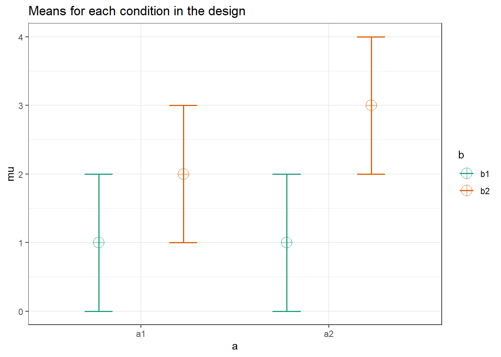

Chapter 7 Power for Interactions
In the 17th Data Colada blog post titled No-way Interactions Uri Simonsohn discusses how a moderated interaction (the effect is there in one condition, but disappears in another condition) requires at least twice as many subjects per cell as a study that simply aims to show the simple effect. For example, see the plot below. Assume the score on the vertical axis is desire for fruit, as a function of the fruit that is available (an apple or a banana) and how hungry people are (not, or very). We see there is a difference between the participants desire for a banana compared to an apple, but only for participants who are very hungry. The point that is made is that you need twice as many participants in each cell to have power for the interaction, as you need for the simple effect.
string <- "2b*2b"
n <- 20
# All means are equal - so there is no real difference.
# Enter means in the order that matches the labels below.
mu <- c(20, 20, 20, 25)
sd <- 0.5
labelnames <- c("fruit", "apple", "banana",
"hunger", "no hunger", "very hungry") #
# the label names should be in the order of the means specified above.
design_result <- ANOVA_design(design = string,
n = n,
mu = mu,
sd = sd,
labelnames = labelnames,
plot = TRUE)
We can reproduce the simulations in the Data Colada blog post, using the original code.
#R-Code
#
#Written by Uri Simonsohn, March 2014
#
#
#In DataColada[17]
# I propose that 2x2 interaction studies need 2x the sample size
#http://datacolada.org/2014/03/10/17-no-way-interactions
#In a companion ,pdf I show the simple math behind it
#
#
#Simulations are often more persuasive than math, so here it goes.
#I run simulations that compute power for 2 and 4 cell design,
# the latter testing the interaction
###############################################################################
#Create function that computes power of Studies 1 and 2,
# where Study 1 has 2 cells and tests a simple effect
#and Study 2 has 4 cells and tests the interaction
colada17 = function(d1,d2,n1,n2,simtot)
{
#n1: sample size, per cell, study 1
#n2: sample size, per cell, study 2
#d1: simple effect M1-M2
#d2: moderated effect M3-M4,
# full elimination of effect implies d2=0
#simtot: how many simulations to run
#Here we will store results
p1 = c() #p-values for Study 1
p2 = c() #p-values for Study 2
for (i in 1:simtot) {
#draw data 4 samples
y1 = rnorm(n = max(n1, n2), mean = d1)
y2 = rnorm(n = max(n1, n2))
y3 = rnorm(n = max(n1, n2), mean = d2)
y4 = rnorm(n = max(n1, n2))
#GET DATA READY FOR ANOVA
y = c(y1, y2, y3, y4) #the d.v.
nrep = rep(n2, 4)
A = rep(c(1, 1, 0, 0), times = nrep)
B = rep(c(1, 0, 1, 0), times = nrep)
#STUDY 1
#Do a t-test on the first n1 observations
p1.k = t.test(y1[1:n1], y2[1:n1], var.equal = TRUE)$p.value
#STUDY 2
#Do anova, keep p-value of the interaction
p2.k = anova(lm(y ~ A * B))["A:B", "Pr(>F)"]
#Store the results
p1 = c(p1, p1.k)
p2 = c(p2, p2.k)
}
#What share off comparisons are significant
#Simple test using estimate of variance from 2 cells only
power1 = sum(p1 <= .05) / simtot
#Interaction
power2 = sum(p2 <= .05) / simtot
cat("\nStudy 1 is powered to:",round(power1,2))
cat("\nStudy 2 is powered to:",round(power2,2))
}
#Same power for 2n regardless of n and d
colada17(simtot = 2000, n1 = 20, n2 = 40, d1 = 1, d2 = 0) ##
## Study 1 is powered to: 0.88
## Study 2 is powered to: 0.88 colada17(simtot = 2000, n1 = 50, n2 = 100, d1 = .3, d2 = 0)##
## Study 1 is powered to: 0.32
## Study 2 is powered to: 0.32 colada17(simtot = 2000, n1 = 150, n2 = 300, d1 = .25, d2 = 0)##
## Study 1 is powered to: 0.57
## Study 2 is powered to: 0.59#Need 4n if effect is 70% attenuated
colada17(simtot = 2000, n1 = 25, n2 = 100, d1 = .5, d2 = .3 * .5)##
## Study 1 is powered to: 0.4
## Study 2 is powered to: 0.4 colada17(simtot = 2000, n1 = 50, n2 = 200, d1 = .5, d2 = .3 * .5)##
## Study 1 is powered to: 0.7
## Study 2 is powered to: 0.7 colada17(simtot = 2000, n1 = 22, n2 = 88, d1 = .41, d2 = .3 * .41)##
## Study 1 is powered to: 0.28
## Study 2 is powered to: 0.27#underpowered if run with the same n
colada17(simtot = nsims, n1 = 20, n2 = 20, d1 = 1, d2 = 0) ##
## Study 1 is powered to: 0.87
## Study 2 is powered to: 0.6And we can reproduce the results using the ANOVA_exact function.
#Study 1
string <- "2b*2b"
n <- 10
# All means are equal - so there is no real difference.
# Enter means in the order that matches the labels below.
mu <- c(1, 2, 1, 2)
sd <- 1
# the label names should be in the order of the means specified above.
design_result <- ANOVA_design(design = string,
n = n,
mu = mu,
sd = sd,
plot = TRUE)
alpha_level <- 0.05 #We set the alpha level at 0.05.
exact_result <- ANOVA_exact(design_result,
alpha_level = alpha_level,
verbose = FALSE)
knitr::kable(exact_result$main_results[2,],
caption = "ANOVA Results")| power | partial_eta_squared | cohen_f | non_centrality | |
|---|---|---|---|---|
| b | 86.8 | 0.2174 | 0.527 | 10 |
#Study 2
string <- "2b*2b"
n <- 20
# All means are equal - so there is no real difference.
# Enter means in the order that matches the labels below.
mu <- c(1, 2, 1, 3)
sd <- 1
# the label names should be in the order of the means specified above.
design_result <- ANOVA_design(design = string,
n = n,
mu = mu,
sd = sd,
plot = TRUE)
alpha_level <- 0.05 #We set the alpha level at 0.05.
exact_result <- ANOVA_exact(design_result,
alpha_level = alpha_level,
verbose = FALSE)
knitr::kable(exact_result$main_results[3,],
caption = "ANOVA Results")| power | partial_eta_squared | cohen_f | non_centrality | |
|---|---|---|---|---|
| a:b | 59.79 | 0.0617 | 0.2565 | 5 |
We see we get the same power for the anova_fruit:hunger interaction and for the simple effect p_fruit_apple_hunger_very hungry_fruit_banana_hunger_very hungry as the simulations by Uri Simonsohn in his blog post.
#Same power for 2n regardless of n and d
colada17(simtot = 10000, n1 = 20, n2 = 40, d1 = 1, d2 = 0) ##
## Study 1 is powered to: 0.87
## Study 2 is powered to: 0.88colada17(simtot = 10000, n1 = 50, n2 = 100, d1 = .3, d2 = 0)##
## Study 1 is powered to: 0.32
## Study 2 is powered to: 0.33colada17(simtot = 10000, n1 = 150, n2 = 300, d1 = .25, d2 = 0)##
## Study 1 is powered to: 0.57
## Study 2 is powered to: 0.58We can also reproduce the last example by adjusting the means and standard deviation. With 150 people, and a Cohen’s d of 0.25 (the difference is 5, the sd 20, so 5/20 = 0.25) we should reproduce the power for the simple effect.
string <- "2b*2b"
n <- 150
mu <- c(20, 20, 20, 25) #All means are equal - so there is no real difference.
# Enter means in the order that matches the labels below.
sd <- 20
labelnames <- c("fruit", "apple", "banana",
"hunger", "no hunger", "very hungry") #
# the label names should be in the order of the means specified above.
design_result <- ANOVA_design(design = string,
n = n,
mu = mu,
sd = sd,
labelnames = labelnames)
alpha_level <- 0.05 #We set the alpha level at 0.05.
exact_result <- ANOVA_exact(design_result,
alpha_level = alpha_level,
verbose = FALSE)
knitr::kable(exact_result$main_results[2,],
caption = "ANOVA Results")| power | partial_eta_squared | cohen_f | non_centrality | |
|---|---|---|---|---|
| hunger | 33.33 | 0.0039 | 0.0627 | 2.3437 |
And changing the sample size to 300 should reproduce the power for the interaction in the ANOVA.
string <- "2b*2b"
n <- 300
mu <- c(20, 20, 20, 25) #All means are equal - so there is no real difference.
# Enter means in the order that matches the labels below.
sd <- 20
labelnames <- c("fruit", "apple", "banana",
"hunger", "no hunger", "very hungry") #
# the label names should be in the order of the means specified above.
design_result <- ANOVA_design(design = string,
n = n,
mu = mu,
sd = sd,
labelnames = labelnames)
alpha_level <- 0.05 #We set the alpha level at 0.05.
exact_result <- ANOVA_exact(design_result, alpha_level = alpha_level)## Power and Effect sizes for ANOVA tests
## power partial_eta_squared cohen_f non_centrality
## fruit 58.06 0.0039 0.0626 4.6875
## hunger 58.06 0.0039 0.0626 4.6875
## fruit:hunger 58.06 0.0039 0.0626 4.6875
##
## Power and Effect sizes for contrasts
## power
## p_fruit_apple_hunger_no hunger_fruit_apple_hunger_very hungry 5.00
## p_fruit_apple_hunger_no hunger_fruit_banana_hunger_no hunger 5.00
## p_fruit_apple_hunger_no hunger_fruit_banana_hunger_very hungry 86.37
## p_fruit_apple_hunger_very hungry_fruit_banana_hunger_no hunger 5.00
## p_fruit_apple_hunger_very hungry_fruit_banana_hunger_very hungry 86.37
## p_fruit_banana_hunger_no hunger_fruit_banana_hunger_very hungry 86.37
## effect_size
## p_fruit_apple_hunger_no hunger_fruit_apple_hunger_very hungry 0.00
## p_fruit_apple_hunger_no hunger_fruit_banana_hunger_no hunger 0.00
## p_fruit_apple_hunger_no hunger_fruit_banana_hunger_very hungry 0.25
## p_fruit_apple_hunger_very hungry_fruit_banana_hunger_no hunger 0.00
## p_fruit_apple_hunger_very hungry_fruit_banana_hunger_very hungry 0.25
## p_fruit_banana_hunger_no hunger_fruit_banana_hunger_very hungry 0.25knitr::kable(exact_result$main_results[3,],
caption = "ANOVA Results")| power | partial_eta_squared | cohen_f | non_centrality | |
|---|---|---|---|---|
| fruit:hunger | 58.06 | 0.0039 | 0.0626 | 4.6875 |
Now if we look at the power analysis table for the last simulation, we see that the power for the ANOVA is the same for the main effect of fruit, the main effect of hunger, and the main effect of the interaction. All the effect sizes are equal as well. We can understand why if we look at the means in a 2x2 table:
mean_mat <- t(matrix(mu,
nrow = 2,
ncol = 2)) #Create a mean matrix
rownames(mean_mat) <- c("apple", "banana")
colnames(mean_mat) <- c("no hunger", "very hungry")
mean_mat## no hunger very hungry
## apple 20 20
## banana 20 25The first main effect tests the marginal means if we sum over rows, 22.5 vs 20.
rowMeans(mean_mat)## apple banana
## 20.0 22.5The second main effect tests the marginal means over the rows, which is also 22.5 vs 20.
colMeans(mean_mat)## no hunger very hungry
## 20.0 22.5The interaction tests whether the average effect of hunger on liking fruit differs in the presence of bananas. In the presence of bananas the effect of hunger on the desireability of fruit is 5 scalepoints. The average effect (that we get from the marginal means) of hunger on fruit desireability is 2.5 (22.5-20). In other words, the interaction tests whether the difference effect between hunger and no hunger is different in the presence of an apple versus in the presence of a banana.
Mathematically the interaction effect is computed as the difference between a cell mean and the grand mean, the marginal mean in row i and the grand mean, and the marginal mean in column j and grand mean. For example, for the very hungry-banana condition this is 25 (the value in the cell) - (21.25 [the grand mean] + 1.25 [the marginal mean in row 2, 22.5, minus the grand mean of 21.25] + 1.25 [the marginal mean in column 2, 22.5, minus the grand mean of 21.25]). 25 - (21.25 + (22.5-21.25) + (22.5-21.25)) = 1.25.
We can repeat this for every cell, and get for no hunger-apple: 20 - (21.25 + (20-21.25) + (20-21.25)) = 1.25, for very hungry apple: 20 - (21.25 + (22.5-21.25) + (20-21.25)) = 1.25, and no hunger-banana: 20 - (21.25 + (20-21.25) + (22.5-21.25)) = 1.25. These values are used to calculate the sum of squares.
a1 <- mean_mat[1,1] - (mean(mean_mat) +
(mean(mean_mat[1,]) - mean(mean_mat)) +
(mean(mean_mat[,1]) - mean(mean_mat)))
a2 <- mean_mat[1,2] - (mean(mean_mat) +
(mean(mean_mat[1,]) - mean(mean_mat)) +
(mean(mean_mat[,2]) - mean(mean_mat)))
b1 <- mean_mat[2,1] - (mean(mean_mat) +
(mean(mean_mat[2,]) - mean(mean_mat)) +
(mean(mean_mat[,1]) - mean(mean_mat)))
b2 <- mean_mat[2,2] - (mean(mean_mat) +
(mean(mean_mat[2,]) - mean(mean_mat)) +
(mean(mean_mat[,2]) - mean(mean_mat)))
SS_ab <- n * sum(c(a1, a2, b1, b2)^2)The sum of squares is dependent on the sample size, as can be seen in the code above. The larger the sample size, the larger the sum of squares, and therefore (all else equal) the larger the F-statistic, and the smaller the p-value. We see from the simulations that all three tests have the same effect size, and therefore the same power.
Interactions can have more power than main effects if the effect size of the interaction is larger than the effect size of the main effects. An example of this is a cross-over interaction. For example, let’s take a 2x2 matrix of means with a crossover interaction:
mu <- c(25, 20, 20, 25)
mean_mat <- t(matrix(mu,
nrow = 2,
ncol = 2)) #Create a mean matrix
rownames(mean_mat) <- c("apple", "banana")
colnames(mean_mat) <- c("no hunger", "very hungry")
mean_mat## no hunger very hungry
## apple 25 20
## banana 20 25Neither of the main effects is now significant, as the marginal means are 22.5 vs 22.5 for both main effects. The interaction is much stronger, however. We are testing whether the average effect of hunger on the desireability of fruit is different in the presence of bananas. Since the average effect is 0, and the effect of hunger on the desireability of bananas is 5, so the effect size is now twice as large.
string <- "2b*2b"
n <- 300
mu <- c(25, 20, 20, 25) #All means are equal - so there is no real difference.
# Enter means in the order that matches the labels below.
sd <- 20
labelnames <- c("fruit", "apple", "banana",
"hunger", "no hunger", "very hungry") #
# the label names should be in the order of the means specified above.
design_result <- ANOVA_design(design = string,
n = n,
mu = mu,
sd = sd,
labelnames = labelnames)
alpha_level <- 0.05 #We set the alpha level at 0.05.
exact_result <- ANOVA_exact(design_result,
alpha_level = alpha_level,
verbose = FALSE)
knitr::kable(exact_result$main_results,
caption = "ANOVA Results")| power | partial_eta_squared | cohen_f | non_centrality | |
|---|---|---|---|---|
| fruit | 5.0 | 0.0000 | 0.0000 | 0.00 |
| hunger | 5.0 | 0.0000 | 0.0000 | 0.00 |
| fruit:hunger | 99.1 | 0.0154 | 0.1252 | 18.75 |
We can also reproduce the power analysis using the analytic function:
power_analytic <- power_twoway_between(design_result)
power_analytic$power_A## [1] 5power_analytic$power_B## [1] 5power_analytic$power_AB## [1] 99.10259